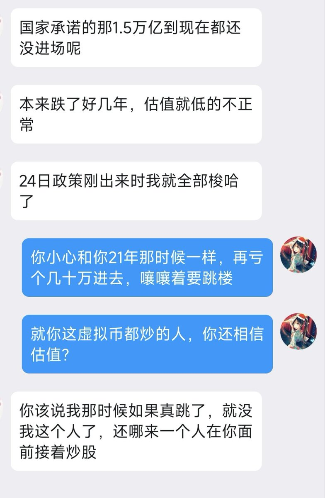

寒涟漪
@HANLIANYI331
不过令人感到唏嘘的是，也许我这么多年来，因为救人放弃了无数的学业，发展，赚钱机会。但是在我曾经救下的无数人那里，他们却有不少人有了属于自己的人生机遇。
包括这次股市大涨，在我身边的这些人里，也有好几个曾经被我救下的人，如今也从这次股市大涨中赚的盆满钵满。…

寒涟漪
@HANLIANYI331
我上一次炒A股是在我刚满18岁的时候，两万元资金入场，先是赚了三千，然后亏了三千八，其后就遭遇19年冬的社群自杀潮，清空了所有股票退场。其后虽然零零散散的炒过一些，但都是几百几千元的娱乐性质。
当我选择炒股的时候，是因为我亏得起，我从最开始就会做好所有钱全部亏掉的打算。…